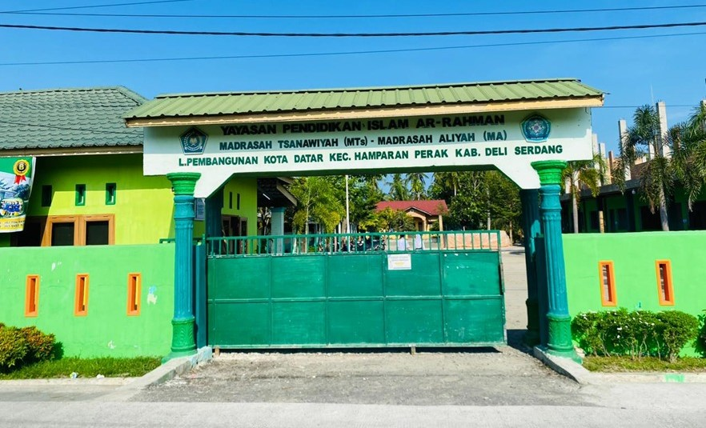

PENDIRI YPI AR-RAHMAN
Nama: H. Abdul Rahman
Lahir: 31 Desmber 1957
Wafat: 22 Januari 2015
Domisili: Kota Datar

MTs dan MA YPI AR-RAHMAN didirikan sebagai wujud kepedulian terhadap kebutuhan masyarakat akan tersedianya lembaga pendidikan Islam tingkat menengah yang mampu memadukan pendidikan agama, pendidikan umum, serta pembentukan karakter peserta didik.
Berlokasi di lingkungan pedesaan yang religius dan memiliki semangat kebersamaan yang tinggi, pendirian madrasah ini diprakarsai oleh Almarhum H. Abdul Rahman bersama tokoh masyarakat dan didukung oleh warga setempat. Kehadiran MTs dan MA YPI AR-RAHMAN diharapkan dapat menjadi sarana pendidikan yang mampu mencetak generasi muda yang beriman, berilmu, berakhlakul karimah, serta memiliki bekal yang kuat dalam menghadapi perkembangan zaman tanpa meninggalkan nilai-nilai keislaman.